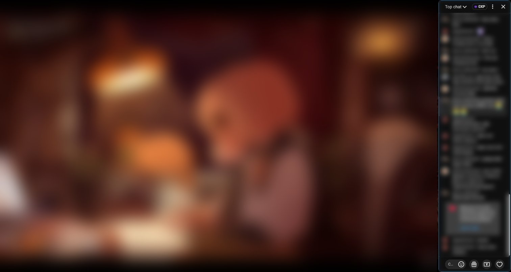

Install YouTube Chat Dock, a free and open-source Chrome extension, then enter fullscreen on a live stream or a video with chat replay. Chat stays in a panel beside the video, and you drag the divider to set its width. YouTube itself gives you chat at a width and a position you cannot change, and has no setting anywhere to change either.

YouTube Chat Dock is a browser extension for watching YouTube. It is not the OBS Studio "chat dock" that streamers use to show chat inside their broadcasting software, and it is not made by YouTube or Google.
How do I set it up?
- Install YouTube Chat Dock from the Chrome Web Store. It needs Chrome 105 or later.
- Reload any YouTube tab that was already open.
- Open a live stream with chat, or a past stream with chat replay. Keep the chat panel open.
- Enter fullscreen with the video player's fullscreen button.
- Drag the divider between the video and chat until chat is comfortable to read.
The video resizes as you drag; it is not covered by chat. Fullscreen remembers its own width, separate from page view and theater mode. You can also set it in advance with the fullscreen width slider in the extension's toolbar popup.
Does chat cover the video?
No. YouTube Chat Dock places chat next to the video and shrinks the video to make room, so no part of the picture sits under the chat. If you would rather have chat floating on top of the video, look for an overlay-style extension instead; that is a different approach.
Can I resize chat with the keyboard?
Yes. Focus the divider, then use these keys:
| Key | Action |
|---|---|
| Left or Right arrow | Move the divider 10 pixels in that direction |
| Shift + Left or Right arrow | Move it 50 pixels |
| Home | Set the minimum chat width |
| End | Set the largest width allowed (up to 1100 pixels, less on smaller screens) |
| Enter or Space | Restore the default width for the current view mode |
The arrows move the divider, not the chat edge: pressing Left widens chat when it is on the right, and narrows it when chat is on the left.
How do I reset the width or move chat to the left?
Double-click the divider to restore the default width for the current view mode. To move chat to the other side of the video, hover over the divider and click its side-switch button, or use the switch in the toolbar popup. The choice is saved.
Why is the divider missing, or why does resizing stop?
- Chat must exist and be open. The extension rearranges YouTube's existing chat. It does not add chat to a video that has none.
- The extension must be switched on. Open the toolbar popup and check that Enable on YouTube is on.
- The window must be wide enough. The divider is hidden when the browser viewport is narrower than 1000 CSS pixels.
- Width has limits. Chat cannot be narrower than 120 CSS pixels or wider than 1100. On smaller screens the maximum is lower, because the extension always keeps room for the video.
If chat replay goes blank after switching to fullscreen, the popup has a separate chat-replay fix setting. That is a different issue from reaching the width limit.
Is it safe?
The extension asks for one Chrome permission, storage, and runs only on youtube.com. It has no analytics or telemetry, and your settings stay in your browser. The source code is public on GitHub under the MIT license. See the privacy policy for details.
For the full feature list and FAQ, see the YouTube Chat Dock product page.